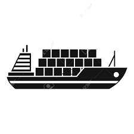
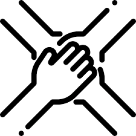

مؤسسة حمد حمدان العديني
من نحن
الرئيسية
اتصل بنا
خدمتنا
موقعنا

التخليص الجمركي
نمـتلك أكبر فريق عمل مختص و ذو كفاءة عاليـة لتخليص أي نوع من البضائـع
الشحن والنقل
يتم نقل لك شحنك الى مستودعاتك في وقت قايسي

الاستشارة
فريقنا يقدم لكم الاستشارة لخدمات التخليص الجمركي والاستيراد والتصدير والشحن